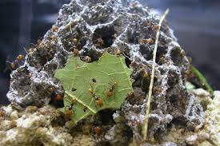

Leaf-Cutting Ants and Fungus
The ants and their agriculture have been extensively studied over the years, but the recent research has uncovered intriguing new findings about the fungus they cultivate, how they domesticated it and how they cultivate it and preserve it from pathogens. For example, the fungus farms, which the ants were thought to keep free of pathogens, turn out to be vulnerable to a devastating mold, found nowhere else but in ants’ nests. To keep the mold in check, the ants long ago made a discovery that would do credit to any pharmaceutical laboratory.
Leaf-cutting ants and their fungus farms are a marvel of nature and perhaps the best known example of symbiosis, the mutual dependence of two species. The ants’ achievement is remarkable -he biologist Edward O. Wilson has called it “one of the major breakthroughs in animal evolution” -because it allows them to eat, courtesy of their mushroom’s digestive powers, the otherwise poisoned harvest of tropical forests whose leaves are laden with terpenoids, alkaloids and other chemicals designed to sicken browsers
Fungus growing seems to have originated only once in evolution, because all gardening ants belong to a single tribe, the descendants of the first fungus farmer. There are more than 200 known species of the attine ant tribe, divided into 12 groups, or genera. The leaf-cutters use fresh vegetation; the other groups, known as the lower attines because their nests are smaller and their techniques more primitive, feed their gardens with detritus like dead leaves, insects and feces. In 1994 a team of four biologists, Ulrich G. Mueller and Ted R. Schultz from Cornell University and Ignacio H. Chapela and Stephen A. Rehner from the United States Department of Agriculture, nanlyzed the DNA of ant funguses. The common assumption that the funguses are all derived from a single strain, they found, was only half true.
The leaf-cutters’ fungus was indeed descended from a single strain, propagated clonally, or just by budding, for at least 23 million years. But the lower attine ants used different varieties of the fungus, and in one case a quite separate species, the four biologists discovered. Cameron R. Currie, a Ph.D. student in the University of Toronto, it seemed to Mr. Currie, resembled the monocultures of various human crops, that are very productive for a while and then succumb to some disastrous pathogen, such as the Irish potato blight. Monocultures, which lack the genetic diversity to respond to changing environmental threats, are sitting ducks for parasites. Mr. Currie felt there had to be a parasite in the ant- fungus system. But a century of ant research offered no support for the idea. Textbooks describe how leaf-cutter ants scrupulously weed their gardens of all foreign organisms. “People kept telling me, ‘You know the ants keep their gardens free of parasites, don’t you?’ “ Mr. Currie said of his efforts to find a hidden interloper.
But after three years of sifting through attine ant gardens, Mr. Currie discovered they are far from free of infections. In last month’s issue of the Proceedings of the National Academy of Sciences, he and two colleagues, Dr. Mueller and David Mairoch, isolated several alien organisms, particularly a family of parasitic molds called Escovopsis. Escovopsis turns out to be a highly virulent pathogen that can devastate a fungus garden in a couple of days. It blooms like a white cloud, with the garden dimly visible underneath. In a day or two the whole garden is enveloped. “Other ants won’t go near it and the ants associated with the garden just starve to death,” Dr. Rehner said. “They just seem to give up, except for those that have rescued their larvae.”
Evidently the ants usually manage to keep Escovopsis and other parasites under control. But with any lapse in control, or if the ants are removed, Escovopsis will quickly burst forth. Although new leaf-cutter gardens start off free of Escovopsis, within two years some 60 percent become infected. The discovery of Escovopsis’s role brings a new level of understanding to the evolution of the attine ants. “In the last decade, evolutionary biologists have been increasingly aware of the role of parasites as driving forces in evolution,” Dr. Schultz said. There is now a possible reason to explain why the lower attine species keep changing the variety of fungus in their mushroom gardens, and occasionally domesticating new ones— to stay one step ahead of the relentless Escovopsis.
Interestingly, Mr. Currie found that the leaf-cutters had in general fewer alien molds in their gardens than the lower attines, yet they had more Escovopsis infections. It seems that the price they pay for cultivating a pure variety of fungus is a higher risk from Escovopsis. But the leaf-cutters may have little alternative: they cultivate a special variety of fungus which, unlike those grown by the lower attines, produces nutritious swollen tips for the ants to eat.
Discovery of a third partner in the ant-fungus symbiosis raises the question of how the attine ants, especially the leaf-cutters, keep this dangerous interloper under control. Amazingly enough, Mr. Currie has again provided the answer. “People have known for a hundred years that ants have a whitish growth on the cuticle,” said Dr. Mueller, referring to the insects’ body surface. “People would say this is like a cuticular wax. But Cameron was the first one in a hundred years to put these things under a microscope. He saw it was not inert wax. It is alive.” Mr. Currie discovered a specialized patch on the ants’ cuticle that harbors a particular kind of bacterium, one well known to the pharmaceutical industry, because it is the source of half the antibiotics used in medicine. From each of 22 species of attine ant studied, Mr. Cameron and colleagues isolated a species of Streptomyces bacterium, they reported in Nature in April. The Streptomyces does not have much effect on ordinary laboratory funguses. But it is a potent poisoner of Escovopsis, inhibiting its growth and suppressing spore formation. Because both the leaf-cutters and the lower attines use Streptomyces, the bacterium may have been part of their symbiosis for almost as long as theEscovopsis mold. If so, some Alexander Fleming of an ant discovered antibiotics millions of years before people did. Even now, the ants are accomplishing two feats beyond the powers of human technology. The leaf-cutters are growing a monocultural crop year after year without disaster, and they are using an antibiotic apparently so wisely and prudently that, unlike people, they are not provoking antibiotic resistance in the target pathogen.
Questions 1-6
Use the information in the passage to match the options (listed A-C) with activities or features of ants below.
Write the appropriate letters A-C in boxes 1-6 on your answer sheet
NB you may use any letter more than once
A Leaf-cutting ants
B Lower attines
C Both leaft-cutting ants and lower attine ants
1 can use toxic leaves to feed fungus
2 build small nests and live with different foreign fungus
3 use dead vegetation to feed fungus
4 raise a single fungus which do not live with other variety of foreigners
5 normally keep a highly dangerous parasite under control
6 use special strategies to fight against Escovopsis
Questions 7-11
The reading Passage has ten paragraphs A-J.
Which paragraph contains the following information?
Write the correct letter A-J, in boxes 7-11 on your answer sheet.
7 Dangerous outcome of Escovopsis.
8 Risk of growing single fungus.
9 Comparison of features of two different nests for feeding gardens.
10 Discovery of significant achievements made by ants earlier than human.
11 Advantage of growing new breed of fungus in the ant farm.
Questions 12-13
Choose the correct letter, A, B, C or D.
Write your answers in boxes 12-13 on your answer sheet.
12. How does author think of Currie’s opinion on the saying “ants keep their gardens free of parasites”?
A his viewpoint was verified later.
B his earlier study has sufficient evidence immediately.
C there is no details mentioned in the article.
D his opinion was proved to be wrong later on.
13. What did scientists find on the skin of ants under microscope?
A some white cloud mold embed in their skin
B that wax is all over their skin
C a substance which is useful to humans
D a substance which suppresses growth of fungus.
---End of the Test---
Please Submit to view your score, solution and explanations.